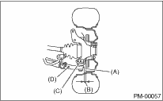
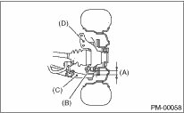
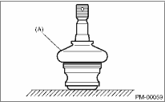
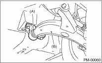

1. Lift up the vehicle until front wheels are off ground.
2. Grasp the bottom of tire and move it in and out. If relative movement is observed between the brake disc cover (A) and end of transverse link (D), ball joint (C) may be excessively worn.

3. Next, grasp the end of transverse link (C) and move it up and down. Relative movement (A) between the housing (D) and transverse link (C) boss indicates ball joint (B) may be excessively worn.

4. If the relative movement is observed in the preceding two steps, remove and inspect the ball joint. If the free play exceeds standard value, replace the ball joint. 
5. Damage of dust seal
Visually inspect the ball joint dust seal. When there is damage, remove the transverse link to measure the play of ball joint.
(1) When looseness exceeds standard value, replace the ball joint.
(2) If the dust seal is damaged, replace it with a new ball joint.
NOTE:
When the transverse link ball joint has been removed or replaced, check the toe-in of front wheel. If it is not within the specified value, adjust the toe-in to the standard value.

|
(A) |
Dust seal |
2. TRANSVERSE LINK REAR BUSHING
Check around the rear bushing for oil leaks. If oil leaks, replace bushing.

|
(A) |
Rear bushing |
|
(B) |
Transverse link |
1. Unload the cargoes and set the vehicle in curb weight (empty) condition.
2. Then, check the wheel arch height of front and rear suspensions to ensure that they are within specified values.
3. When the wheel arch height is out of the tolerance value, visually inspect the following components and replace deformed parts.
• Suspension components [Front strut assembly and rear strut assembly]
• Parts connecting suspension and body
4. When no components are deformed, adjust wheel arch height by replacing coil spring in the suspension whose wheel arch height is out of standard.
4. WHEEL ALIGNMENT OF FRONT SUSPENSION
1. Check the alignment of front suspension to make sure the following items are within tolerance.
• Toe-in
• Camber
• Caster (Referential Value)
• Steering angle
2. When the caster angle does not conform to the reference value obviously, visually inspect the following components and replace deformed parts.
• Suspension components [Strut assembly, crossmember, transverse link, etc.]
• Parts connecting suspension and body
3. When the toe-in and camber are out of tolerance value, adjust them so that they conform to tolerance value.
4. If steering is not within the specified value, adjust it to standard value.
5. WHEEL ALIGNMENT OF REAR SUSPENSION
1. Check the alignment of rear suspension to make sure the following items are within tolerance.
• Toe-in
• Camber
• Thrust angle
2. When the camber is out of the tolerance value, visually inspect the following components and replace deformed parts.
• Suspension components [Shock absorber, front lateral link, rear lateral link, and trailing link]
• Parts connecting suspension and body
3. When the toe-in and thrust angle are out of tolerance value, adjust them so that they conform to tolerance value.
Visually inspect the front strut and rear strut for oil leakage. If the oil leakage reaches to the lower side of spring seat lower part, replace the front strut and rear strut.
7. TIGHTNESS OF BOLTS AND NUTS
Check the bolts and nuts for looseness. Retighten the bolts and nuts to specified torque. If the self-locking nuts and bolts are removed, replace them with new parts.
Front suspension:
Rear suspension:
Check the following parts and the fastening portion of the vehicle body for deformation or excessive rusting which impairs the suspension. Thoroughly remove the deposits from the spring seat lower part of strut which tends to accumulate dirt and sand, etc. If necessary, replace the damaged parts with new parts. If minor rust, pitting, etc. are noted, remove the rust and take rust prevention measure.
• Front suspension
• Transverse link
• Crossmember
• Strut
• Rear suspension
• Crossmember
• Lateral link
• Trailing link
• Strut
• In the area where salt is sprayed to melt snow on a road in winter, check suspension parts for damage caused by rust every 12 months after lapse of 60 months. Also, take rust prevention measure as required.